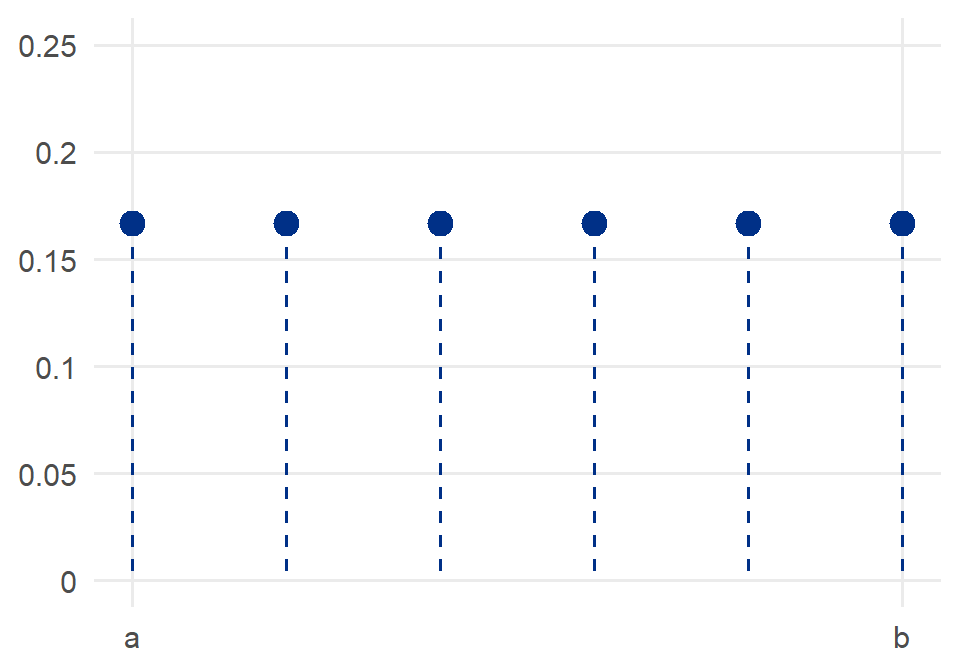
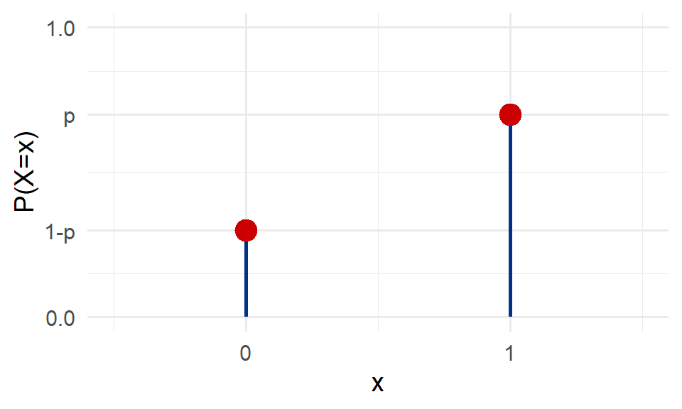
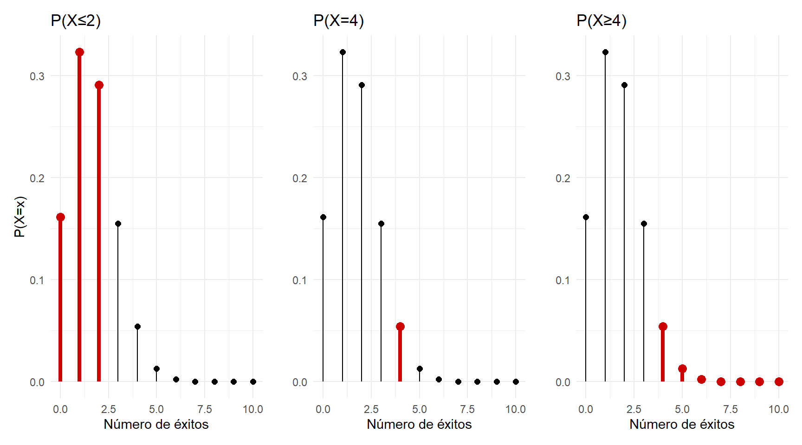

Definición. Una variable aleatoria uniforme discreta \(X\) cuya distribución de probabilidad es:
\[ f_X(x) = \begin{cases} \dfrac{1}{N} & x = 1, 2, 3, \ldots, N \\ 0 & \text{en otro caso} \end{cases} \]

Sea \(X\) una v.a.d. con distribución uniforme discreta, entonces:
\[ E(X) = \sum_{x=1}^{N} x\, f_X(x) = \sum_{x=1}^{N} x \cdot \frac{1}{N} = \frac{1}{N} \cdot \frac{N(N+1)}{2} = \frac{N+1}{2} \]
\[ \text{Var}(X) = E(X^2) - [E(X)]^2 = \frac{1}{N}\sum_{x=1}^{N}x^2 - \left(\frac{N+1}{2}\right)^2 = \frac{N^2-1}{12} \]
Resultados
\[E(X) = \frac{N+1}{2} \qquad \text{Var}(X) = \frac{N^2-1}{12}\]
Ejemplo. Se lanza un dado. Sea \(X\) = número de puntos obtenido. Es evidente que la distribución de probabilidad de \(X\) es una distribución uniforme con:
\[ f_X(x) = \begin{cases} \dfrac{1}{6} & x = 1, 2, 3, \ldots, 6 \\ 0 & \text{en otro caso} \end{cases} \]
\[ E(X) = \frac{N+1}{2} = \frac{7}{2} = 3{,}5 \qquad \text{Var}(X) = \frac{N^2-1}{12} = \frac{36-1}{12} = \frac{35}{12} \approx 2{,}917 \]
R/ \(E(X) = 3{,}5\) y \(\text{Var}(X) = \dfrac{35}{12} \approx 2{,}917\)
Definición. Una variable aleatoria \(X\) cuya distribución de probabilidad es:
\[ f_X(x) = \begin{cases} p^x(1-p)^{1-x} & x = 0, 1 \\ 0 & \text{en otro caso} \end{cases} \]
donde \(0 < p < 1\), se dice que tiene una distribución de Bernoulli de parámetro \(p\). También se dice que \(X\) es una variable aleatoria Bernoulli.

Teorema. Si \(X\) es una variable aleatoria discreta tal que \(X \sim \text{Ber}(p)\), entonces esta cumple con las siguientes propiedades:
\[ F_X(x) = \begin{cases} 0 & x < 0 \\ 1-p & 0 \leq x < 1 \\ 1 & x \geq 1 \end{cases} \]
\(E(X) = p\)
\(\text{Var}(X) = p(1-p)\)
Definición. Un experimento aleatorio cuyos resultados pueden clasificarse en dos categorías, llamadas “éxito” y “fracaso”, se llama un experimento o ensayo de Bernoulli.
Ejemplo. Sea \(X\) una variable aleatoria que toma el valor 1 si un experimento de Bernoulli resulta en un “éxito” y el valor 0 si el experimento resulta en un “fracaso”. Si llamamos con \(p\) la probabilidad de que el experimento resulte en un “éxito”, es obvio que \(X\) puede tomar los valores 0 y 1 con probabilidades \(1-p\) y \(p\) respectivamente. La distribución de \(X\) es por lo tanto una distribución de Bernoulli \(f(x;\, p)\).
Ejemplo. En una clase hay 20 estudiantes: 12 mujeres y 8 hombres. Se extrae al azar un estudiante. Clasifiquemos los resultados posibles en dos categorías: mujer (éxito), hombre (fracaso). Sea \(X = 1\) si el resultado es un “éxito” y \(0\) si es un “fracaso”. La distribución de \(X\) es una distribución de Bernoulli con \(p = \tfrac{12}{20} = 0{,}6\). Es decir:
\[ f(x) = \begin{cases} 0{,}6^x\, 0{,}4^{1-x} & x = 0, 1 \\ 0 & \text{en otro caso} \end{cases} \]
R/ \(X \sim \text{Ber}(p = 0{,}6)\), con \(E(X) = 0{,}6\) y \(\text{Var}(X) = 0{,}6 \times 0{,}4 = 0{,}24\).
Sea \(X\) una v.a.d. con distribución de Bernoulli, entonces \(E(X) = p\) y \(\text{Var}(X) = p(1-p)\).
Demostración:
\[ E(X) = \sum_{x=0}^{1} x\, p^x(1-p)^{1-x} = 0 \cdot p^0(1-p)^1 + 1 \cdot p^1(1-p)^0 = p \]
\[ \text{Var}(X) = E(X^2) - [E(X)]^2 = \sum_{x=0}^{1} x^2\, p^x(1-p)^{1-x} - p^2 \]
\[ = \left[0^2 \cdot p^0(1-p)^1 + 1^2 \cdot p^1(1-p)^0\right] - p^2 = p - p^2 = p(1-p) \]
La v.a.d. que define el experimento de lanzamiento de una moneda sigue una distribución de Bernoulli de parámetro \(p\), donde \(p\) es la probabilidad del suceso de interés: escudo o corona.
Ejemplo. Se realiza el experimento que consiste en lanzar un dado equilibrado, y se define el evento \(A\): se obtiene el número 3 como resultado.
Si obtener un 3 es considerado como un éxito, entonces \(p = P(A) = \tfrac{1}{6}\), mientras que no obtener un 3 sería fracaso, con probabilidad \(1 - p = \tfrac{5}{6}\).
Se define la variable aleatoria \(X\): número de veces que aparece el 3. Si no se obtiene un 3, \(X = 0\) (fracaso); si se obtiene el 3, \(X = 1\) (éxito). Esta variable \(X\) sigue una distribución de Bernoulli: \(X \sim \text{Ber}\!\left(p = \tfrac{1}{6}\right)\).
La función de distribución de probabilidad del ejemplo anterior es:
\[ f_X(x) = \begin{cases} \left(\dfrac{1}{6}\right)^x \left(\dfrac{5}{6}\right)^{1-x} & x \in \{0,1\} \\ 0 & \text{en otro caso} \end{cases} \]
Por el teorema anterior, se tiene:
\(F_X(x) = \begin{cases} 0 & x < 0 \\ \tfrac{5}{6} & 0 \leq x < 1 \\ 1 & x \geq 1 \end{cases}\)
\(E(X) = \dfrac{1}{6}\)
\(\text{Var}(X) = \dfrac{1}{6}\!\left(\dfrac{5}{6}\right) = \dfrac{5}{36}\)
Ahora, si se realizan \(n\) experimentos de Bernoulli y se define la variable aleatoria discreta \(X\): número de veces que se obtiene un éxito, entonces \(X\) se distribuye como una distribución binomial.
Todo experimento binomial debe cumplir con lo siguiente:
Definición. Se dice que una variable aleatoria \(X\) tiene una distribución binomial de parámetros \(n\) y \(p\), con \(0 < p < 1\) y \(n\) entero, si posee una función de densidad de probabilidad:
\[ f_X(x) = \begin{cases} \dbinom{n}{x} p^x (1-p)^{n-x} & x \in \{0, 1, 2, 3, \ldots, n\} \\ 0 & \text{en otro caso} \end{cases} \]
En ocasiones, a esta distribución se le denota por \(\text{Bin}(n,p)\).
En el caso de una variable aleatoria con distribución de Bernoulli, esta es equivalente a una binomial para la cual \(n=1\) con probabilidad de éxito \(p\), es decir, \(\text{Ber}(p) = \text{Bin}(1,p)\).
Teorema. Si \(X\) es una variable aleatoria discreta tal que \(X \sim \text{Bin}(n,p)\), entonces esta cumple con las siguientes propiedades:
\[ F_X(x) = \begin{cases} 0 & \text{si } x < 0 \\ \displaystyle\sum_{k=0}^{\lfloor x \rfloor} \binom{n}{k} p^k(1-p)^{n-k} & \text{si } 0 \leq x < n \\ 1 & \text{si } x \geq n \end{cases} \]
con \(\lfloor x \rfloor\) la parte entera de \(x\).
\(E(X) = np\)
\(\text{Var}(X) = np(1-p)\)
Demostración (propiedad 2):
\[ E(X) = \sum_{x=0}^{n} x \cdot \frac{n!}{x!(n-x)!}\, p^x(1-p)^{n-x} = np \sum_{x=1}^{n} \frac{(n-1)!}{(x-1)!(n-x)!}\, p^{x-1}(1-p)^{n-x} \]
\[ = np \sum_{x=0}^{n-1} \frac{(n-1)!}{x!\,((n-1)-x)!}\, p^x(1-p)^{(n-1)-x} = np\,(p + 1-p)^{n-1} = np \]
usando el Binomio de Newton: \((a+b)^n = \displaystyle\sum_{k=0}^{n}\binom{n}{k}a^{n-k}b^k\).
Demostración (propiedad 3):
\[ \text{Var}(X) = E(X^2) - [E(X)]^2 = E(X(X-1)) + E(X) - n^2p^2 \]
\[ = \sum_{x=0}^{n} x(x-1)\frac{n!}{x!(n-x)!}\,p^x(1-p)^{n-x} + np - n^2p^2 \]
\[ = n(n-1)p^2 \sum_{x=2}^{n}\frac{(n-2)!}{(x-2)!(n-x)!}\,p^{x-2}(1-p)^{n-x} + np - n^2p^2 \]
\[ = n(n-1)p^2(p+1-p)^{n-2} + np - n^2p^2 = n^2p^2 - np^2 + np - n^2p^2 = np(1-p) \]
Ejemplo. Se selecciona una muestra aleatoria de 3 personas del padrón de votantes de la última elección. Sea \(X\) el número de personas que votaron por el partido Acción Ciudadana (PAC). Suponga que la probabilidad de que una persona del padrón vote por el PAC es de 0,40, y que la selección de los tres votantes son pruebas independientes. Determine la función de probabilidad, media y varianza de \(X\).
\(n = 3\), \(p = 0{,}40\), \(1-p = 0{,}60\).
\[ f_X(x) = \begin{cases} \dbinom{3}{x} 0{,}4^x\, 0{,}6^{3-x} & x \in \{0,1,2,3\} \\ 0 & \text{en otro caso} \end{cases} \]
\[ E(X) = np = 3 \times 0{,}4 = 1{,}2 \qquad \text{Var}(X) = np(1-p) = 3 \times 0{,}4 \times 0{,}6 = 0{,}72 \]
R/ \(E(X) = 1{,}2\) y \(\text{Var}(X) = 0{,}72\).
Ejemplo. Un dado equilibrado de seis caras se lanza 10 veces. Sea \(X\) el número de veces que aparece el 3 en las 10 repeticiones. Entonces \(X \sim \text{Bin}\!\left(n=10,\, p=\tfrac{1}{6}\right)\).
a) La función de probabilidad de \(X\) es:
\[ P(X=x) = \begin{cases} \dbinom{10}{x}\!\left(\dfrac{1}{6}\right)^x\!\left(\dfrac{5}{6}\right)^{10-x} & x \in \{0,1,2,\ldots,10\} \\ 0 & \text{en otro caso} \end{cases} \]
b) \(P(X=4) = \dbinom{10}{4}\!\left(\dfrac{1}{6}\right)^4\!\left(\dfrac{5}{6}\right)^{6} = \dfrac{10!}{4!\,6!}\!\left(\dfrac{1}{6}\right)^4\!\left(\dfrac{5}{6}\right)^{6} \approx 0{,}0543\)
c) \(P(X \geq 4) = 1 - P(X < 4) = 1 - \displaystyle\sum_{x=0}^{3}\binom{10}{x}\!\left(\tfrac{1}{6}\right)^x\!\left(\tfrac{5}{6}\right)^{10-x}\)
\(\approx 1 - (0{,}1615 + 0{,}3230 + 0{,}2907 + 0{,}1550) \approx 0{,}0698\)
d) \(P(X \leq 2) = \displaystyle\sum_{x=0}^{2}\binom{10}{x}\!\left(\tfrac{1}{6}\right)^x\!\left(\tfrac{5}{6}\right)^{10-x}\)
\(= P(X=0) + P(X=1) + P(X=2) \approx 0{,}1615 + 0{,}3230 + 0{,}2907 \approx 0{,}7752\)
e) \(E(X) = np = 10 \cdot \dfrac{1}{6} = \dfrac{5}{3} \approx 1{,}667\)
\[\sigma = \sqrt{\text{Var}(X)} = \sqrt{np(1-p)} = \sqrt{10 \cdot \frac{1}{6} \cdot \frac{5}{6}} = \frac{5\sqrt{2}}{6} \approx 1{,}179\]
R/ \(P(X=4) \approx 0{,}0543\); \(P(X \geq 4) \approx 0{,}0698\); \(P(X \leq 2) \approx 0{,}7752\); \(E(X) \approx 1{,}667\); \(\sigma \approx 1{,}179\).

Ejemplo. Suponga que, en una fábrica de autos, la probabilidad de tener una unidad defectuosa en la línea de ensamble es de 0,05. Si al conjunto de 12 unidades terminadas se le puede ver como un conjunto de ensayos de Bernoulli independientes, determine:
a) Sea \(X\) el número de unidades defectuosas en el conjunto de 12 unidades terminadas:
\[ P(X=x) = \begin{cases} \dbinom{12}{x}(0{,}05)^x(0{,}95)^{12-x} & x \in \{0,1,2,\ldots,12\} \\ 0 & \text{en otro caso} \end{cases} \]
b) \(P(X=2) = \dbinom{12}{2}(0{,}05)^2(0{,}95)^{10} = \dfrac{12!}{2!\,10!}(0{,}05)^2(0{,}95)^{10} \approx 0{,}0988\)
c) \(P(X \leq 2) = P(X=0) + P(X=1) + P(X=2) \approx 0{,}5404 + 0{,}3413 + 0{,}0988 \approx 0{,}9804\)
d) \(P(X \geq 1) = 1 - P(X=0) = 1 - \dbinom{12}{0}(0{,}05)^0(0{,}95)^{12} \approx 1 - 0{,}5404 \approx 0{,}4596\)
R/ \(P(X=2) \approx 0{,}0988\); \(P(X \leq 2) \approx 0{,}9804\); \(P(X \geq 1) \approx 0{,}4596\).
A causa de las condiciones económicas imperantes en el mercado, una empresa informa que el 30% de sus cuentas por cobrar están sobrevencidas. Si un contador toma una muestra aleatoria de cinco cuentas, determine la probabilidad de que:
La probabilidad de que un paciente se recupere de una enfermedad en la sangre es del 40%. Si se sabe que 15 personas han contraído esta enfermedad, ¿cuál es la probabilidad de que sobrevivan:
El 30% de un determinado pueblo ve un concurso que hay en televisión. Desde el concurso se llama por teléfono a 10 personas del pueblo elegidas al azar.
Calcular la probabilidad de que, entre las 10 personas, estuvieran viendo el programa:
En la teoría de probabilidad, la distribución de probabilidad hipergeométrica es un modelo estadístico utilizado para describir la probabilidad de obtener un cierto número de éxitos en una muestra sin reemplazo, cuando se seleccionan elementos de una población finita que contiene tanto éxitos como fracasos. Esta distribución se caracteriza por tres parámetros: el tamaño de la población, el número de éxitos en la población y el tamaño de la muestra.
Definición. Se dice que una variable aleatoria \(X\) tiene una distribución hipergeométrica de parámetros \(N\), \(K\) y \(n\), si posee una función de densidad de probabilidad:
\[ f_X(x) = \begin{cases} \dfrac{\dbinom{K}{x}\dbinom{N-K}{n-x}}{\dbinom{N}{n}} & \text{máx}\{0, n+K-N\} \leq x \leq \text{mín}\{n, K\} \\ 0 & \text{en otro caso} \end{cases} \]
donde:
A esta distribución se le denota por \(X \sim HG(N, K, n)\).
Las condiciones de un experimento hipergeométrico son:
El experimento consiste en extraer una muestra aleatoria de tamaño \(n\) sin reemplazo ni consideración de su orden, de un conjunto de \(N\) elementos.
De los \(N\) objetos, \(K\) poseen el rasgo de interés, mientras los otros \(N-K\) objetos restantes no lo tienen.
La variable aleatoria \(X\) es el número de objetos de la muestra que posee el rasgo.
Teorema. Si \(X \sim HG(N,K,n)\), entonces esta cumple con las siguientes propiedades:
\[ F_X(x) = \begin{cases} 0 & \text{si } x < \text{máx}\{0, n+K-N\} \\ \displaystyle\sum_{i=0}^{\lfloor x \rfloor} \frac{\binom{K}{i}\binom{N-K}{n-i}}{\binom{N}{n}} & \text{si } \text{máx}\{0,n+K-N\} \leq x \leq \text{mín}\{n,K\} \\ 1 & \text{si } x > \text{mín}\{n,K\} \end{cases} \]
\(E(X) = \dfrac{nK}{N}\)
\(\text{Var}(X) = \dfrac{nK(N-K)}{N^2} \cdot \dfrac{N-n}{N-1}\)
Ejemplo. Un lote de 40 microcomponentes electrónicos se considera aceptable, en un muestreo de aceptación de calidad, si tiene 3 o menos defectuosos. El proceso para muestrear el lote es la selección de 5 componentes al azar y rechazar el lote si se encuentra uno defectuoso.
a) Sea \(X\) el número de microcomponentes defectuosos. Los datos son: \(x=1\), \(n=5\), \(N=40\), \(K=3\).
\[ P(X=1) = \frac{\dbinom{3}{1}\dbinom{40-3}{5-1}}{\dbinom{40}{5}} = \frac{\dbinom{3}{1}\dbinom{37}{4}}{\dbinom{40}{5}} \approx 0{,}3011 \]
La probabilidad de encontrar un microcomponente defectuoso en la muestra es de 30,11%.
b) La media y la varianza son:
\[ E(X) = \frac{nK}{N} = \frac{5 \cdot 3}{40} = 0{,}375 \]
\[ \text{Var}(X) = \frac{nK(N-K)}{N^2}\cdot\frac{N-n}{N-1} = \frac{5 \cdot 3 \cdot 37}{40^2}\cdot\frac{35}{39} \approx 0{,}311 \]
Ejemplo. Una fábrica de automóviles compra los motores a una empresa proveedora que tiene altos estándares de calidad. El fabricante recibe de esta empresa un lote de 100 motores; un ingeniero de esta fábrica selecciona 8 motores al azar del lote para la inspección, y establece que si no se encuentra con defectos entonces acepta el lote, caso contrario, lo rechaza. Si el lote contiene 2 motores defectuosos, ¿cuál es la probabilidad de que el ingeniero encuentre a lo sumo un motor defectuoso?
Sea \(X\) el número de motores defectuosos. Los datos son: \(n=8\), \(N=100\), \(K=2\).
\[ P(X \leq 1) = P(X=0) + P(X=1) = \frac{\dbinom{2}{0}\dbinom{98}{8}}{\dbinom{100}{8}} + \frac{\dbinom{2}{1}\dbinom{98}{7}}{\dbinom{100}{8}} \approx 0{,}9943 \]
La probabilidad de encontrar a lo sumo un motor defectuoso es de 99,43%.
R/ \(P(X \leq 1) \approx 0{,}9943\).
Ejemplo. En una urna hay 8 canicas rojas y 45 blancas. Se toma una muestra al azar de 10 canicas sin reemplazo. ¿Cuál es la probabilidad de que 4 de las 10 canicas sean rojas?
Solución: Sea \(X\) el número de canicas extraídas de color rojo. Los datos son: \(x=4\), \(n=10\), \(N=53\), \(K=8\).
\[ P(X=4) = \frac{\dbinom{8}{4}\dbinom{53-8}{10-4}}{\dbinom{53}{10}} = \frac{\dbinom{8}{4}\dbinom{45}{6}}{\dbinom{53}{10}} \approx 0{,}0292 \]
La probabilidad de que 4 canicas sean rojas es de aproximadamente 2,92%.
R/ \(P(X=4) \approx 0{,}0292\).
Teorema. Si \(X \sim HG(N,K,n)\) y \(N \to \infty\) con \(p = K/N\) constante, entonces:
\[ \lim_{N \to \infty} \frac{\dbinom{K}{x}\dbinom{N-K}{n-x}}{\dbinom{N}{n}} = \binom{n}{x} p^x (1-p)^{n-x} \]
Es decir, cuando el tamaño de la población es suficientemente grande respecto al tamaño de la muestra, la distribución hipergeométrica puede aproximarse mediante una distribución binomial con \(p = K/N\).
Ejemplo. En un lote de \(N=100\) componentes electrónicos, hay 40 defectuosos. Sea \(X\) el número de componentes defectuosos en una muestra aleatoria de tamaño 20. Encuentre \(P(X=10)\) mediante la distribución hipergeométrica, y compárela con el resultado obtenido al emplear la distribución binomial.
Solución: Con la distribución hipergeométrica (\(K=40\), \(N=100\), \(n=20\)): \(P(X=10) = \frac{\dbinom{40}{10}\dbinom{60}{10}}{\dbinom{100}{20}} \approx 0{,}1192\)
Con la distribución binomial (\(p = K/N = 0{,}4\)): \(P(X=10) = \dbinom{20}{10}(0{,}4)^{10}(0{,}6)^{10} \approx 0{,}117\)
Se concluye que \(N=100\) es suficientemente grande para obtener una buena aproximación de \(P(X=10)\) mediante la distribución binomial.
La distribución geométrica se basa en lo aprendido de la distribución binomial. En este caso, el experimento continúa hasta que se produce un éxito o un fracaso, en lugar de un número determinado de ensayos. Hay cuatro características principales:
Una v.a. \(X\) cuya distribución de probabilidad es:
\[ f_X(x) = \begin{cases} p\,(1-p)^{x-1} & x = 1, 2, 3, \ldots \\ 0 & \text{en otro caso} \end{cases} \]
con \(0 < p < 1\), se dice que tiene una distribución geométrica de parámetro \(p\).
Para una distribución geométrica, el valor esperado y la varianza están dados por:
\[ E(X) = \frac{1}{p} \qquad \text{Var}(X) = \frac{1-p}{p^2} \]
Ejemplo. Se lanzan dardos a una tabla hasta que se golpea el área central. La probabilidad de golpear el área central es \(p = 0{,}17\). ¿Cuál es la probabilidad de dar en el blanco en la tirada 5?
Sea \(X\) = número de tiradas hasta acertar en el blanco.
\[ f_X(x) = \begin{cases} 0{,}17\,(0{,}83)^{x-1} & x = 1, 2, 3, \ldots \\ 0 & \text{en otro caso} \end{cases} \]
\[ P(X=5) = 0{,}17\,(0{,}83)^{4} \approx 0{,}0807 \]
\[ E(X) = \frac{1}{0{,}17} \approx 5{,}882 \qquad \text{Var}(X) = \frac{0{,}83}{(0{,}17)^2} \approx 28{,}72 \]
R/ \(P(X=5) \approx 0{,}0807\); \(E(X) \approx 5{,}882\); \(\text{Var}(X) \approx 28{,}72\).
Una v.a. \(X\) cuya distribución de probabilidad es:
\[ f_X(x) = \begin{cases} \dbinom{x-1}{r-1} p^r (1-p)^{x-r} & x = r,\, r+1,\, r+2, \ldots \\ 0 & \text{en otro caso} \end{cases} \]
donde \(r\) es un entero positivo (\(r\) = número de éxitos deseados), \(0 < p < 1\), se dice que tiene una distribución binomial negativa de parámetros \(r\) y \(p\).
\[ E(X) = \frac{r}{p} \qquad \text{Var}(X) = \frac{r(1-p)}{p^2} \]
Cuando \(r=1\), la distribución binomial negativa es la distribución geométrica de parámetro \(p\).
Ejemplo. Se lanzan dardos a una tabla hasta que se golpea el área central por tercera vez. La probabilidad de golpear el área central es \(p = 0{,}17\). ¿Cuál es la probabilidad de que el quinto lanzamiento sea el tercero en dar en el blanco?
Sea \(X\) = número de tiradas hasta obtener la tercera acertada. \(r=3\), \(x=5\), \(p=0{,}17\).
\[ P(X=5) = \binom{4}{2}(0{,}17)^3(0{,}83)^{5-3} = 6 \times (0{,}17)^3 \times (0{,}83)^2 \approx 0{,}0203 \]
\[ E(X) = \frac{r}{p} = \frac{3}{0{,}17} \approx 17{,}647 \qquad \text{Var}(X) = \frac{3 \times 0{,}83}{(0{,}17)^2} \approx 86{,}159 \]
R/ \(P(X=5) \approx 0{,}0203\); \(E(X) \approx 17{,}647\); \(\text{Var}(X) \approx 86{,}159\).
Cuando se requiere modelar fenómenos aleatorios donde la variable discreta representa conteos, se emplea la distribución de Poisson. Por ejemplo, fenómenos tales como: el número de accidentes por semana en una autopista, número de llamadas que se reciben por minuto en una central telefónica, cantidad de autos que pasan por un determinado peaje en una hora, el número de bacterias por unidad de volumen, el número de llegadas de clientes al mostrador de una caja de un banco en un minuto determinado, entre muchos otros fenómenos.
Para cada uno de los anteriores, \(X\) representa el número de eventos que ocurren en un periodo o espacio, durante el cual se puede esperar que ocurra un promedio de \(\lambda\) de estos eventos. Los supuestos necesarios son: las cuentas o eventos ocurren al azar y, además, deben ser independientes.
Definición. Una variable aleatoria \(X\) se dice que tiene una distribución de Poisson de parámetro \(\lambda > 0\), si posee una función de densidad de probabilidad:
\[ f_X(x) = \begin{cases} \dfrac{\lambda^x e^{-\lambda}}{x!} & x \in \{0, 1, 2, 3, \ldots\} \\ 0 & \text{en otro caso} \end{cases} \]
En ocasiones, a esta distribución se le denota por \(\text{Poiss}(\lambda)\).
Además, \(\lambda = mt > 0\), donde \(m\) es el número promedio de resultados por unidad de tiempo, distancia, área o volumen.
Teorema. Si \(X \sim \text{Poiss}(\lambda)\), entonces esta cumple con las siguientes propiedades:
\[ F_X(x) = \begin{cases} 0 & \text{si } x < 0 \\ \displaystyle\sum_{k=0}^{\lfloor x \rfloor} \dfrac{\lambda^k e^{-\lambda}}{k!} & \text{si } x \geq 0 \end{cases} \]
con \(\lfloor x \rfloor\) la parte entera de \(x\).
\(E(X) = \lambda\)
\(\text{Var}(X) = \lambda\)
Ejemplo. Sea \(X\) la variable aleatoria que representa el número de accidentes mortales ocurridos en una cierta intersección vial, con un promedio de un accidente por día.
a) \(m = 1\) accidente/día, \(t = 7\) días, \(\lambda = 1 \cdot 7 = 7\).
\[ P(X = x) = \frac{7^x e^{-7}}{x!}, \quad x = 0, 1, 2, \ldots \]
\[ P(X > 10) = 1 - P(X \leq 10) = 1 - \sum_{x=0}^{10}\frac{7^x e^{-7}}{x!} \approx 1 - 0{,}9015 = 0{,}0985 \]
b) \(m = 1\) accidente/día, \(t = 30\) días, \(\lambda = 1 \cdot 30 = 30\).
\[ P(X = 20) = \frac{30^{20} e^{-30}}{20!} \approx 0{,}0134 \]
R/ \(P(X > 10) \approx 0{,}0985\); \(P(X = 20) \approx 0{,}0134\).
Ejemplo. Suponga que el número de perros callejeros \(X\) rescatados por día tiene una distribución de Poisson con un promedio de 3,2 perros rescatados por día. ¿Cuál es la probabilidad de que se rescaten menos de 5 perros en 2 días?
Solución: \(m = 3{,}2\) perros/día, \(t = 2\) días, \(\lambda = 3{,}2 \cdot 2 = 6{,}4\).
\[ P(X < 5) = \sum_{x=0}^{4}\frac{6{,}4^x e^{-6{,}4}}{x!} = P(X=0)+P(X=1)+P(X=2)+P(X=3)+P(X=4) \]
\[ \approx 0{,}00166 + 0{,}01062 + 0{,}03398 + 0{,}07247 + 0{,}11596 \approx 0{,}2347 \]
R/ \(P(X < 5) \approx 0{,}2347\).
Teorema. Si \(X \sim \text{Bin}(n,p)\) con \(n \to \infty\), \(p \to 0\) y \(\lambda = np\) constante, entonces:
\[ \lim_{n \to \infty} \binom{n}{x} p^x(1-p)^{n-x} = \frac{\lambda^x e^{-\lambda}}{x!} \]
Es decir, cuando \(n\) es grande y \(p\) es pequeño, la distribución binomial puede aproximarse mediante una distribución de Poisson con \(\lambda = np\).
Ejemplo. Si se sabe que la probabilidad de que un individuo sufra una reacción adversa a un determinado fármaco es de 0,001, determine la probabilidad de que, de 2000 individuos:
Solución: \(X \sim \text{Bin}(2000;\, 0{,}001)\). Como \(n\) es grande y \(p\) es pequeño, se utiliza la aproximación de Poisson con \(\lambda = np = 2{,}000 \cdot 0{,}001 = 2\).
a) \(P(X=3) = \dfrac{2^3 e^{-2}}{3!} \approx 0{,}180\)
b) \(P(X > 2) = 1 - P(X \leq 2) = 1 - 5e^{-2} \approx 1 - 0{,}677 = 0{,}323\)
R/ \(P(X=3) \approx 0{,}180\); \(P(X > 2) \approx 0{,}323\).
Una empresa de autobuses posee una flotilla de 23 unidades. Se sabe que 5 autobuses están en malas condiciones mecánicas por lo que es imposible que pasen revisión técnica vehicular; los demás se encuentran en perfectas condiciones. En la mañana de hoy están en la estación las 23 unidades y se eligen, al azar, cuatro autobuses para ir a revisión técnica.
Para evitar que lo descubran en la aduana, un viajero ha colocado 6 tabletas de narcótico en una botella que contiene 9 píldoras de vitamina que son similares en apariencia. Si el oficial de la aduana selecciona 3 tabletas aleatoriamente para analizarlas:
Un cierto proceso de manufactura se sabe que en promedio 1 de cada 100 piezas sale defectuosa. ¿Cuál es la probabilidad de que la quinta pieza sea la primera pieza defectuosa?
Si la probabilidad de que un dispositivo de rastreo aéreo muestre una desviación del objetivo excesiva es del 5%, se someten a prueba varios equipos. ¿Cuál es la probabilidad de que el sexto de esos dispositivos de medición sometidos a prueba sea el primero en mostrar una desviación excesiva?
Suponga que la probabilidad de mal funcionamiento de un motor durante cualquier periodo de una hora es 0,02. Encuentre la probabilidad de que un motor determinado funcione bien durante dos horas consecutivas.
(Sugerencia: denote con \(X\) el número de intervalos de tiempo de una hora hasta la primera falla del motor.)
Un estudio geológico indica que un pozo petrolero de exploración perforado en una región particular debe producir petróleo con probabilidad de 0,2. Encuentre la probabilidad de que el tercer descubrimiento de petróleo llegue en el quinto pozo perforado.
El número promedio de reclamos presentados a una compañía de seguros por daños sufridos en vehículos es de 2 por hora. Calcule la probabilidad de que se presenten:
El número promedio de accidentes de tránsito que ocurren en un tramo de la autopista General Cañas es de dos por semana. Suponiendo que los accidentes siguen una distribución de Poisson, obtenga la probabilidad de que en este tramo de la autopista:
Una compañía de seguros garantiza pólizas de seguros individuales contra retrasos aéreos de más de doce horas. Una encuesta ha permitido estimar a lo largo de un año que cada persona tiene una probabilidad de 1 en mil de ser víctima de un retraso aéreo cubierto por este tipo de póliza, y que la compañía aseguradora podrá vender una media de cuatro mil pólizas al año. Se pide hallar las siguientes probabilidades: